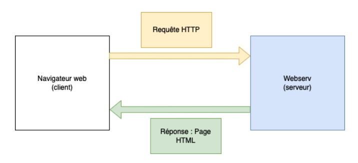

WEBSERV
Objectifs du projet
L’objectif de ce projet est de créer un serveur web basé sur le protocole HTTP. Un serveur HTTP est un programme qui permet à des clients de se connecter et d’envoyer des requetes ; Le serveur leur répond en envoyant des réponses HTTP.
